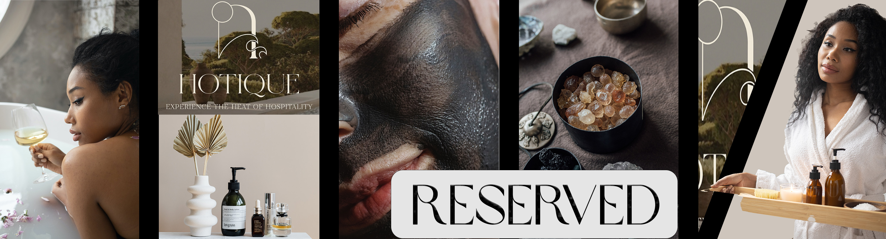
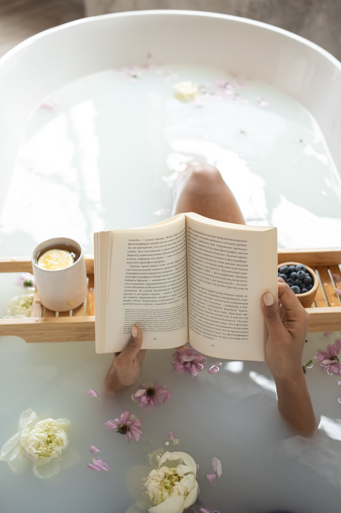

Relax, Explore, Enjoy
Hotique is a modern fusion of a luxury hotel and a boutique salon and spa, designed for guests who value comfort, beauty, and intentional self-care. Each space is thoughtfully curated to create a calm and welcoming environment where relaxation meets refinement. Whether you are visiting for a peaceful getaway or a restorative spa experience, Hotique invites you to slow down, reconnect, and enjoy a more mindful escape.
Amenities and Options for Everyone
At Hotique, every detail is designed to create a seamless experience of comfort, beauty, and care. Guests are invited to
unwind in a refined spa environment offering personalized treatments, tranquil relaxation spaces, and thoughtfully curated
self-care services. From warm soaking areas to calming treatment rooms, each space encourages rest, renewal, and a sense of
balance.
Beyond the spa, Hotique offers a carefully curated café and dining experience where guests can enjoy artisanal
beverages and nourishing menu selections in a relaxed, intimate setting. Whether beginning the day with a quiet coffee,
enjoying a light meal between treatments, or gathering in the evening for a refined dining experience, the café provides
a welcoming space to pause and connect.
Together, these amenities create an environment where luxury feels effortless and personal. Whether visiting for a
single service or an extended stay, Hotique offers guests the freedom to move at their own pace and enjoy a thoughtfully
elevated retreat centered on well-being.

An Escape For Any Time of Year
Hotique is designed to be a destination of balance, set within an environment known for its calm, even temperament throughout the year.
This naturally steady atmosphere allows guests to enjoy restorative experiences in every season, free from extremes and distractions.
Whether visiting during cooler months or warmer days, Hotique provides a consistently serene setting where comfort and relaxation remain the focus.
Guests may choose from a range of thoughtfully structured service levels, allowing each visit to feel personal and accessible. From approachable self-care
experiences to exclusive offerings curated by world-renowned spa specialists, Hotique ensures that every guest can engage with the space in a way that suits
their needs and lifestyle. Membership options provide opportunities for both casual visits and elevated, ongoing experiences designed for deeper restoration
and refinement.
By combining a tranquil environment with flexible levels of service, Hotique offers an escape that evolves with its guests. Whether
seeking a simple moment of calm or a fully immersive luxury experience, Hotique remains a welcoming retreat year-round, centered on care, intention,
and well-being.